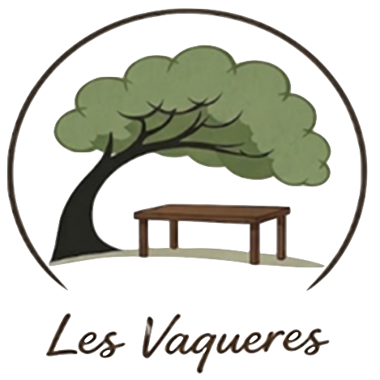
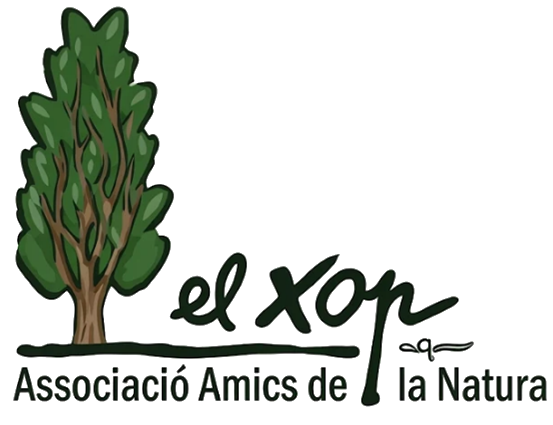
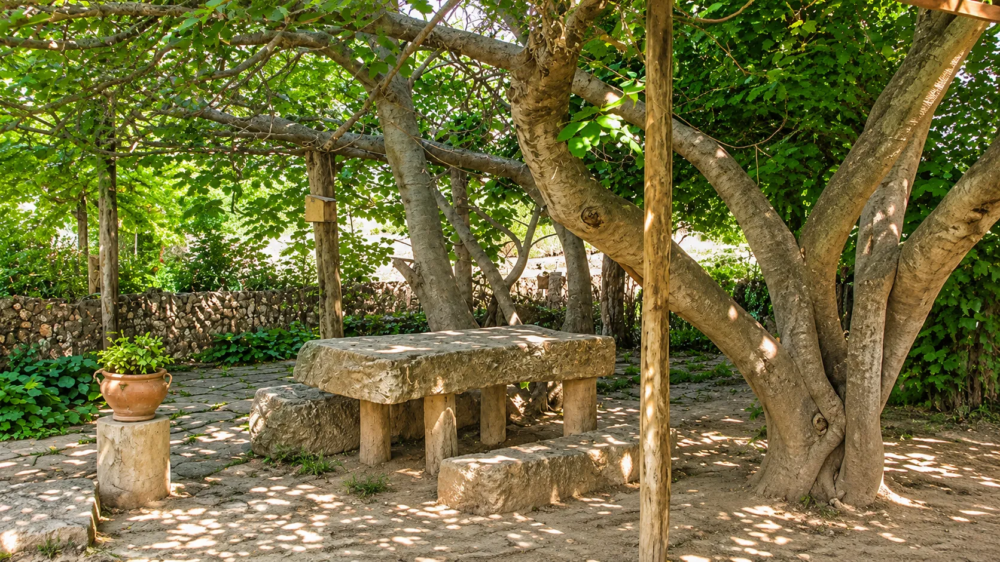

The poplar is vertical: it rises, keeps watch, connects with the sky.

A sign of water, of life.




We live in a world that moves too fast. Sometimes all we need to finish that book, prepare a big project, study without interruptions or simply find ourselves again is time and silence.
The Amics de la Natura association opens the doors of a place made for focus and wellbeing in the middle of nature. Five cosy, self-contained apartments (one of them fully accessible) in the quiet landscape of the Horta de Lleida, where the western light and the rhythm of the land keep time.
Whether you are an artist looking for inspiration, studying for exams, writing the first pages of a story or simply need a few days of calm and disconnection, this is your place.
A place to rest. A breather for your mind. A place where nature keeps you company.

As on the old medieval roads, the cypresses mark the welcome to Les Vaqueres. Three together on arrival and a fourth a little further on, just as tall, reinforcing the ancient symbol of welcome and hospitality: the promise of a peaceful roof, a plate at the table and a safe shelter for the journey.
Further up rises our Wise Poplar: not the tallest, but the largest and oldest in Catalonia, measured at its trunk one metre thirty-five above the ground, as Martí Boada himself confirmed. It is the patriarch of the Horta, the silent, wise lookout that guards the peace of this place.
In the shelter of the house, the hundred-year-old fig tree awaits us. If the poplar protects with its size and memory, the fig tree welcomes from up close: with its long bench and the door open to the shared kitchen, it offers the intimate shade where conversations flow and time stands still.
The poplar and the fig tree are two attitudes towards the world that complement each other.
The poplar is vertical: it rises, keeps watch, connects with the sky.
A sign of water, of life.
The fig tree is horizontal: it opens its arms, gives shade, invites you to sit.

A symbol of fertility, abundance and wisdom.
There is continuity.
They complement each other. It is almost a story.